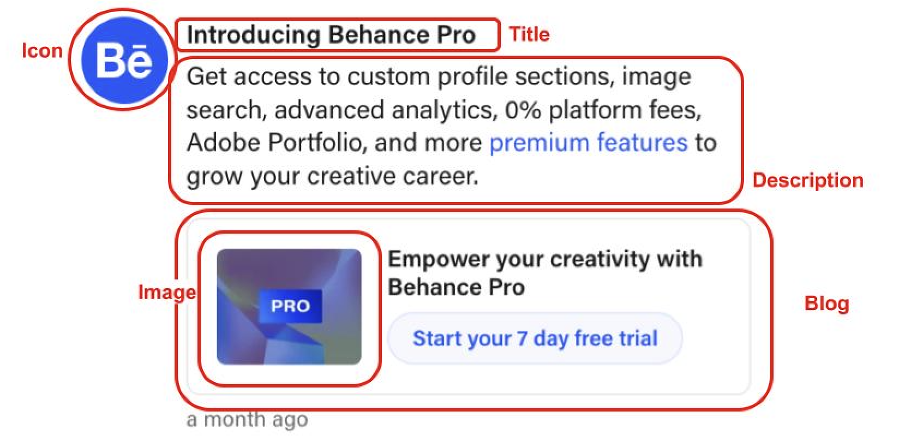
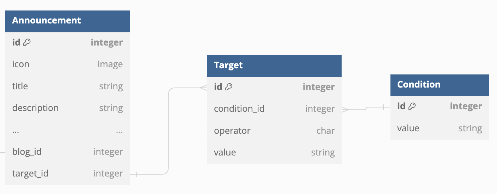
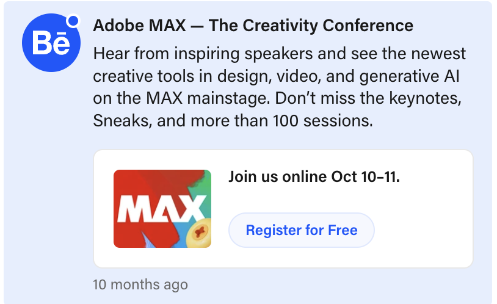

At Adobe I worked with the BeHance team. I worked with git and visual studio code.
I mainly worked on the backend portion of their announcement feature, adding new features for announcement creation.
Previously, for each announcement created on Be.net a blog post had to be created to since the announcements sourced their content(Icon, Title, ...) from blog posts which the developer linked.(Click on image below to show database schematic.). So I added custom fields into the database for developers to directly input the data and integrated it into the backend so that a blog post was optional, and instead could be replaced by filling in custom fields. This dramatically reduced the overhead for announcemenet creation.
The second part of my internship required me to create target conditions for announcements, which decide when to show what announcements and to which users. This allowed for the users of BeHance to recieve more relevant announcements and to minimize user fatigue from too much notifications. I designed the database relation below to implement the targeting feature. Each announcement could have multiple targets([Condition] [operation] [value], ex: [User.posts] [>=] [3]) based on who the developers want to show it to, and also, to prevent data duplication in the database, I created a seperate Condition object for which each target condition references rather than copies, saving data. Below is a schematic of my design.
My feature was first used by the behance team to announce the upcoming Adobe MAX conference to all users located in the United States. I'm happy to report there were no bugs! Below is what it looks like on the BeHance website.
